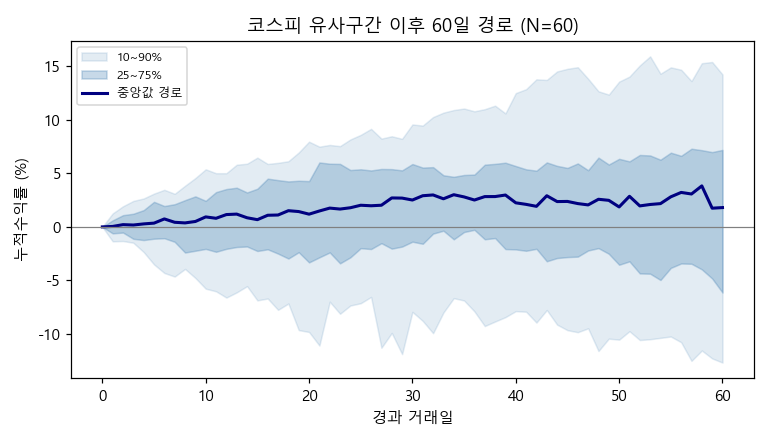
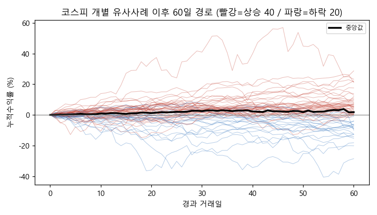
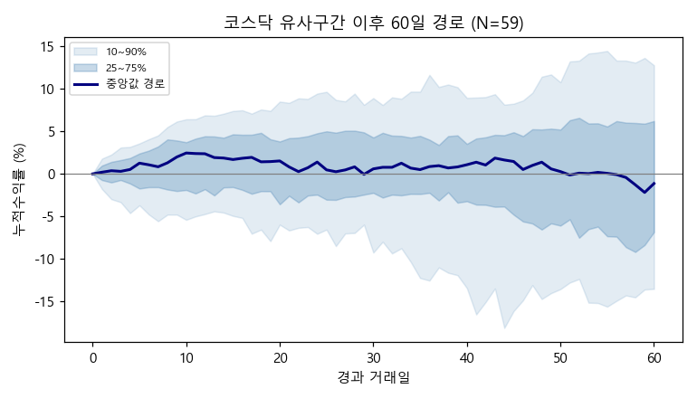
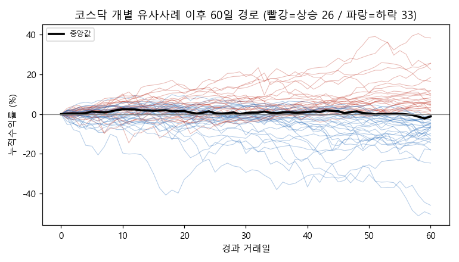
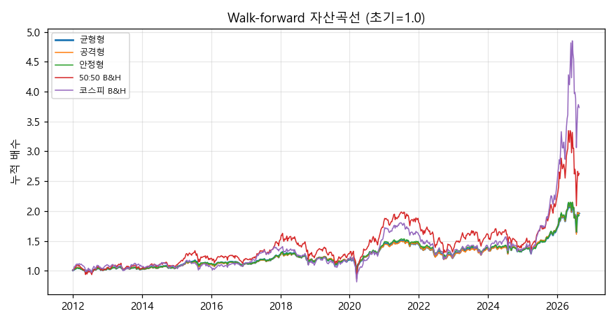

기준일: 2026-08-27 | 생성시각: 2026-09-01 15:10:21 | 분석 표본: 과거 20년 일봉 + 투자자 수급
모든 통계는 기준일 이전 데이터만 사용(Look-ahead 차단). AI 주관이 아니라 과거 유사구간 사례의 실제 결과를 근거로 한다. 밑줄 친 용어는 클릭하면 맨 아래 부록에서 쉬운 설명을 볼 수 있습니다.
███████████░░░░░░░░░███████████░░░░░░░░░Forward Return 분포 (유사 사례 기준)
| 구간 | N | 평균 | 중앙값 | 상승확률 | +5%↑ | -5%↓ | 하위10% | 상위10% |
|---|---|---|---|---|---|---|---|---|
| D+1 | 60 | +0.08% | +0.04% | 53% | 0% | 0% | -1.3% | +1.3% |
| D+3 | 60 | +0.25% | +0.17% | 55% | 3% | 2% | -1.5% | +2.4% |
| D+5 | 60 | +0.19% | +0.35% | 58% | 3% | 7% | -3.5% | +3.1% |
| D+10 | 60 | +0.22% | +0.93% | 57% | 13% | 12% | -5.8% | +5.4% |
| D+20 | 60 | +0.31% | +1.19% | 55% | 22% | 15% | -9.8% | +8.0% |
| D+60 | 60 | +1.67% | +1.80% | 67% | 38% | 27% | -12.7% | +14.2% |
| D+120 | 59 | +5.35% | +2.71% | 56% | 41% | 31% | -13.1% | +29.2% |
현재와 가장 유사했던 과거 Top 15 (그 이후 실제 결과 포함) *그날의 지표·다구간 실제수익 상세표는 하단 부록 B 참조*
| 순위 | 유사날짜 | 당시 국면 | 거리 | 이후 20일 실제 | 이후 60일 실제 |
|---|---|---|---|---|---|
| 1 | 2020-04-16 | 하락전환초기 | 4.54 | +6.7% | +17.6% |
| 2 | 2008-12-17 | 횡보 | 5.84 | -1.6% | +0.0% |
| 3 | 2011-10-14 | 하락전환초기 | 7.56 | +1.5% | -0.5% |
| 4 | 2011-09-08 | 하락 | 8.08 | -2.0% | +3.9% |
| 5 | 2008-09-26 | 하락 | 8.37 | -35.9% | -20.1% |
| 6 | 2009-03-19 | 횡보 | 8.67 | +15.1% | +21.6% |
| 7 | 2008-02-21 | 하락전환초기 | 8.74 | -4.8% | +8.4% |
| 8 | 2009-02-04 | 횡보 | 9.20 | -11.4% | +12.0% |
| 9 | 2024-08-23 | 하락전환초기 | 9.41 | -3.9% | -6.2% |
| 10 | 2008-11-14 | 강한하락 | 9.50 | +1.4% | +9.6% |
| 11 | 2008-08-06 | 하락 | 9.57 | -9.6% | -28.5% |
| 12 | 2025-05-07 | 횡보 | 9.91 | +9.3% | +21.2% |
| 13 | 2006-07-10 | 상승전환초기 | 10.10 | +0.9% | +1.5% |
| 14 | 2026-04-13 | 횡보 | 10.20 | +35.0% | +28.7% |
| 15 | 2023-11-17 | 상승전환초기 | 10.22 | +3.8% | +7.2% |
상승/하락을 가른 변수 (상승 33 vs 하락 27)
| Feature | 상승사례 평균 | 하락사례 평균 | 표준화차이 |
|---|---|---|---|
| rsi14 | 57.72 | 54.08 | +0.67 |
| ret5 | 2.13 | 1.29 | +0.49 |
| disp20 | 103.05 | 102.21 | +0.47 |
| disp120 | 100.51 | 97.73 | +0.38 |
| ret20 | 4.33 | 2.79 | +0.37 |
| inst_z20 | 0.53 | 0.16 | +0.37 |
Forward Return 분포 (유사 사례 기준)
| 구간 | N | 평균 | 중앙값 | 상승확률 | +5%↑ | -5%↓ | 하위10% | 상위10% |
|---|---|---|---|---|---|---|---|---|
| D+1 | 60 | +0.01% | +0.15% | 55% | 0% | 2% | -2.0% | +1.8% |
| D+3 | 60 | -0.21% | +0.30% | 58% | 2% | 10% | -3.6% | +3.0% |
| D+5 | 60 | -0.02% | +0.84% | 60% | 2% | 10% | -5.0% | +3.5% |
| D+10 | 60 | +0.74% | +2.29% | 60% | 20% | 15% | -5.4% | +6.4% |
| D+20 | 60 | -0.16% | +1.49% | 58% | 22% | 15% | -7.1% | +8.4% |
| D+60 | 59 | -1.18% | -1.13% | 44% | 29% | 34% | -13.5% | +12.7% |
| D+120 | 57 | +2.59% | +0.51% | 51% | 33% | 35% | -16.5% | +22.1% |
현재와 가장 유사했던 과거 Top 15 (그 이후 실제 결과 포함) *그날의 지표·다구간 실제수익 상세표는 하단 부록 B 참조*
| 순위 | 유사날짜 | 당시 국면 | 거리 | 이후 20일 실제 | 이후 60일 실제 |
|---|---|---|---|---|---|
| 1 | 2008-12-24 | 횡보 | 4.57 | +8.4% | +25.6% |
| 2 | 2008-10-01 | 강한하락 | 4.65 | -32.9% | -24.6% |
| 3 | 2008-02-22 | 하락전환초기 | 5.06 | -5.7% | -0.9% |
| 4 | 2019-09-04 | 하락후 반등 | 5.10 | -0.3% | +0.0% |
| 5 | 2023-11-23 | 횡보 | 5.18 | +5.3% | +6.6% |
| 6 | 2022-11-01 | 하락 | 5.27 | +3.9% | +5.5% |
| 7 | 2024-09-03 | 하락 | 5.29 | +2.4% | -10.9% |
| 8 | 2011-10-25 | 횡보 | 5.29 | +2.6% | +4.2% |
| 9 | 2020-04-24 | 횡보 | 5.37 | +14.5% | +25.6% |
| 10 | 2018-11-26 | 하락 | 5.41 | -3.7% | +7.4% |
| 11 | 2015-09-21 | 하락전환초기 | 5.55 | -1.8% | -4.5% |
| 12 | 2011-09-07 | 하락전환초기 | 5.60 | -4.2% | +4.9% |
| 13 | 2025-01-09 | 하락전환초기 | 5.74 | +3.0% | -5.8% |
| 14 | 2006-07-06 | 하락 | 5.97 | -3.6% | +4.7% |
| 15 | 2025-04-28 | 횡보 | 6.06 | +2.3% | +11.8% |
상승/하락을 가른 변수 (상승 35 vs 하락 25)
| Feature | 상승사례 평균 | 하락사례 평균 | 표준화차이 |
|---|---|---|---|
| disp60 | 98.75 | 96.76 | +0.42 |
| rsi14 | 51.85 | 49.63 | +0.37 |
| macd_hist_n | 0.35 | 0.48 | -0.35 |
| disp120 | 96.78 | 94.58 | +0.28 |
| ret5 | 0.79 | 0.43 | +0.20 |
| mdd120 | -13.38 | -15.11 | +0.19 |
전략별 성과 비교 (성향 3종 + 단순 baseline + B&H 등 벤치마크 5종)
| 전략 | 총수익 | CAGR | 변동성 | Sharpe | Sortino | MDD | Calmar | 승률 |
|---|---|---|---|---|---|---|---|---|
| 공격형 | +97% | +4.9% | 14.2% | 0.40 | 0.49 | -31% | 0.16 | 57% |
| 균형형 | +96% | +4.8% | 13.2% | 0.42 | 0.52 | -30% | 0.16 | 57% |
| 안정형 | +93% | +4.7% | 12.4% | 0.43 | 0.53 | -28% | 0.17 | 57% |
| 단순방향(baseline) | +96% | +4.8% | 13.9% | 0.41 | 0.50 | -31% | 0.16 | 57% |
| 코스피 B&H | +273% | +9.7% | 21.0% | 0.55 | 0.70 | -42% | 0.23 | 56% |
| 코스닥 B&H | +65% | +3.6% | 26.3% | 0.27 | 0.34 | -52% | 0.07 | 55% |
| 50:50 B&H | +163% | +7.0% | 22.0% | 0.42 | 0.52 | -47% | 0.15 | 57% |
| 현금 100% | +0% | +0.0% | 0.0% | 0.00 | 0.00 | 0% | 0.00 | 0% |
| MA200 추세추종 | +70% | +3.8% | 16.7% | 0.31 | 0.30 | -39% | 0.10 | 32% |
파라미터 민감도 — 유사사례 수 K (균형형) *넓은 범위에서 성과가 유지되면 과적합이 아님*
| K(유사사례 수) | CAGR | MDD | Sharpe | Calmar |
|---|---|---|---|---|
| 20 | +4.6% | -26% | 0.44 | 0.18 |
| 40 | +4.8% | -29% | 0.42 | 0.16 |
| 60 | +4.8% | -30% | 0.42 | 0.16 |
연도별 성과 (균형형 vs 코스피)
| 연도 | 균형형 | 코스피 |
|---|---|---|
| 2012 | +3.4% | +10.2% |
| 2013 | -0.9% | -2.2% |
| 2014 | +2.6% | -2.1% |
| 2015 | +5.9% | -0.1% |
| 2016 | +0.8% | +6.2% |
| 2017 | +12.2% | +21.3% |
| 2018 | -8.9% | -19.6% |
| 2019 | +3.3% | +9.1% |
| 2020 | +21.7% | +36.5% |
| 2021 | -0.1% | -1.4% |
| 2022 | -15.9% | -24.2% |
| 2023 | +13.8% | +17.5% |
| 2024 | -1.9% | -4.6% |
| 2025 | +24.9% | +73.2% |
| 2026 | +16.0% | +58.3% |
부트스트랩 신뢰구간 (균형형, 1000회 블록 리샘플링)
거래비용 민감도 (균형형, 회전율×수수료) *비용을 반영해도 성과가 유지되는지 확인*
| 회당 비용 | CAGR | MDD | Sharpe | Calmar |
|---|---|---|---|---|
| 0.0% | +4.8% | -30% | 0.42 | 0.16 |
| 0.1% | +4.8% | -30% | 0.42 | 0.16 |
| 0.2% | +4.7% | -30% | 0.41 | 0.15 |
| 0.3% | +4.7% | -30% | 0.41 | 0.15 |
국면별 성과 분해 (균형형, 코스피 MA200 기준) *추세장/역추세장에서 각각 어떻게 작동했는지*
| 국면 | 리밸런싱 횟수 | 회당 평균수익 | 승률 | 누적수익 |
|---|---|---|---|---|
| 추세장(MA200 상회) | 423회 | +0.04% | 55% | +14.1% |
| 역추세장(MA200 하회) | 296회 | +0.21% | 59% | +71.7% |
이격도 × 이동평균선 전략 그리드 *이동평균 7종(MA20~MA200) × 이격도 임계값 6종(105~130) = 42개 조합. 규칙: 가격>MA 이면서 이격도≤임계값(과열 아님)일 때만 100% 노출*
_CAGR 매트릭스_ (행=이동평균선, 열=이격도 임계값)
| MA＼이격 | ≤105 | ≤110 | ≤115 | ≤120 | ≤125 | ≤130 |
|---|---|---|---|---|---|---|
| MA20 | +4.4% | +8.1% | +7.5% | +7.1% | +7.1% | +7.1% |
| MA40 | -1.1% | +2.0% | +3.6% | +4.1% | +4.2% | +3.6% |
| MA60 | -0.4% | +1.9% | +3.0% | +4.5% | +4.8% | +4.6% |
| MA90 | -0.1% | +1.1% | +2.1% | +3.9% | +4.9% | +4.9% |
| MA120 | +2.0% | +0.8% | +3.6% | +4.2% | +5.4% | +5.0% |
| MA150 | +0.3% | +1.1% | +1.4% | +3.3% | +4.2% | +4.1% |
| MA200 | -2.6% | -2.3% | -0.3% | +0.7% | +1.6% | +1.8% |
_Sharpe 매트릭스_ (행=이동평균선, 열=이격도 임계값)
| MA＼이격 | ≤105 | ≤110 | ≤115 | ≤120 | ≤125 | ≤130 |
|---|---|---|---|---|---|---|
| MA20 | 0.48 | 0.73 | 0.67 | 0.63 | 0.63 | 0.63 |
| MA40 | -0.08 | 0.24 | 0.36 | 0.39 | 0.40 | 0.34 |
| MA60 | -0.01 | 0.23 | 0.32 | 0.42 | 0.44 | 0.43 |
| MA90 | 0.03 | 0.15 | 0.24 | 0.38 | 0.43 | 0.42 |
| MA120 | 0.34 | 0.13 | 0.38 | 0.41 | 0.50 | 0.46 |
| MA150 | 0.08 | 0.18 | 0.19 | 0.34 | 0.41 | 0.39 |
| MA200 | -0.39 | -0.23 | 0.02 | 0.12 | 0.19 | 0.21 |
종합: 두 시장을 합산한 권장 주식비중은 54%입니다. 이는 방향(상승확률)·기대수익·하방위험·표본 신뢰도를 분리 계산한 뒤 위험조정 노출로 산출한 값이며, 신뢰도가 낮을수록 중립(50%)에 가깝게 수축됩니다.
*본 리포트는 과거 데이터 기반 통계이며 미래 수익을 보장하지 않습니다. 표본 수(N)와 신뢰도를 반드시 함께 확인하세요.*





아래 항목의 제목을 클릭하면 펼쳐집니다. 본문에서 밑줄 친 용어를 클릭하면 해당 설명으로 자동 이동·펼쳐집니다.
현재 국면: 횡보 · 유사사례 N: 60개 · 신뢰도: 49/100 (충분)
4가지 요소를 따로 계산한 뒤 합쳐 비중을 만듭니다:
종합점수 = 0.45×방향 + 0.30×수익 + 0.25×위험 = 58/100
신뢰도 수축: 중립 50에서 (종합−50)×(신뢰도/100) = (58−50)×49% = +4.0 만큼 이동 → 최종 50 +4.0 ≈ 권장 주식비중 54% (40~60%)
💡 신뢰도가 낮을수록 결과가 50%(중립)에 가깝게 수축합니다. 데이터가 확실하지 않으면 “잘 모르니 중간만 가자”가 되도록 설계했습니다.
현재 국면: 횡보 · 유사사례 N: 60개 · 신뢰도: 49/100 (충분)
4가지 요소를 따로 계산한 뒤 합쳐 비중을 만듭니다:
종합점수 = 0.45×방향 + 0.30×수익 + 0.25×위험 = 58/100
신뢰도 수축: 중립 50에서 (종합−50)×(신뢰도/100) = (58−50)×49% = +3.7 만큼 이동 → 최종 50 +3.7 ≈ 권장 주식비중 54% (40~60%)
💡 신뢰도가 낮을수록 결과가 50%(중립)에 가깝게 수축합니다. 데이터가 확실하지 않으면 “잘 모르니 중간만 가자”가 되도록 설계했습니다.
본문 Top 15의 각 사례를 더 자세히 봅니다. “그날의 시장 지표”와 “이후 실제 수익률(여러 기간)”을 함께 보여주므로, 지금과 비슷했던 과거가 실제로 어떻게 흘러갔는지 확인할 수 있습니다. +Nd는 해당일로부터 N거래일 뒤 실제 수익률이며, ‘-’는 아직 그만큼 시간이 지나지 않아 실현되지 않은 경우입니다.
| # | 유사날짜 | 당시 국면 | 거리 | RSI | 이격20 | 이격60 | 외국인z | 기관z | 120MDD | +5d | +10d | +20d | +60d | +120d |
|---|---|---|---|---|---|---|---|---|---|---|---|---|---|---|
| 1 | 2020-04-16 | 하락전환초기 | 4.54 | 54.4 | 107.7 | 94.6 | -1.4 | +0.3 | -18.1 | +3.1 | +2.1 | +6.7 | +17.6 | +29.4 |
| 2 | 2008-12-17 | 횡보 | 5.84 | 59.0 | 109.7 | 100.9 | +1.9 | -0.6 | -30.2 | -3.5 | +0.3 | -1.6 | +0.0 | +22.1 |
| 3 | 2011-10-14 | 하락전환초기 | 7.56 | 54.7 | 103.6 | 97.8 | +0.1 | +1.4 | -17.7 | +0.2 | +5.1 | +1.5 | -0.5 | +10.5 |
| 4 | 2011-09-08 | 하락 | 8.08 | 47.2 | 101.7 | 92.4 | -0.4 | +0.1 | -17.2 | -1.4 | -10.5 | -2.0 | +3.9 | +8.3 |
| 5 | 2008-09-26 | 하락 | 8.37 | 50.1 | 102.0 | 97.3 | +0.0 | +0.7 | -21.8 | -8.0 | -12.7 | -35.9 | -20.1 | -18.8 |
| 6 | 2009-03-19 | 횡보 | 8.67 | 60.5 | 106.6 | 102.3 | +0.1 | +0.3 | -22.6 | +7.1 | +9.9 | +15.1 | +21.6 | +38.5 |
| 7 | 2008-02-21 | 하락전환초기 | 8.74 | 50.0 | 102.6 | 95.4 | -0.5 | +1.1 | -17.5 | +1.9 | -0.4 | -4.8 | +8.4 | -7.8 |
| 8 | 2009-02-04 | 횡보 | 9.20 | 58.0 | 103.3 | 107.2 | +1.5 | -1.2 | -24.4 | -0.4 | -6.9 | -11.4 | +12.0 | +25.7 |
| 9 | 2024-08-23 | 하락전환초기 | 9.41 | 51.3 | 101.6 | 98.7 | -0.7 | -0.5 | -6.6 | -1.0 | -5.8 | -3.9 | -6.2 | -2.2 |
| 10 | 2008-11-14 | 강한하락 | 9.50 | 42.1 | 99.3 | 83.1 | +0.3 | -0.3 | -41.2 | -7.8 | -1.1 | +1.4 | +9.6 | +29.0 |
| 11 | 2008-08-06 | 하락 | 9.57 | 47.5 | 101.1 | 93.3 | -0.0 | -0.1 | -16.4 | -1.0 | -4.2 | -9.6 | -28.5 | -27.3 |
| 12 | 2025-05-07 | 횡보 | 9.91 | 59.7 | 103.9 | 101.0 | -0.6 | +0.6 | -3.7 | +2.6 | +2.0 | +9.3 | +21.2 | +64.0 |
| 13 | 2006-07-10 | 상승전환초기 | 10.10 | 55.4 | 103.7 | 97.1 | -0.7 | +0.7 | -11.3 | -5.1 | -1.5 | +0.9 | +1.5 | +7.5 |
| 14 | 2026-04-13 | 횡보 | 10.20 | 56.1 | 104.4 | 107.0 | -1.2 | +1.5 | -7.9 | +7.1 | +13.9 | +35.0 | +28.7 | - |
| 15 | 2023-11-17 | 상승전환초기 | 10.22 | 56.1 | 103.4 | 100.1 | -0.1 | +1.8 | -7.4 | +1.1 | +1.4 | +3.8 | +7.2 | +10.3 |
| # | 유사날짜 | 당시 국면 | 거리 | RSI | 이격20 | 이격60 | 외국인z | 기관z | 120MDD | +5d | +10d | +20d | +60d | +120d |
|---|---|---|---|---|---|---|---|---|---|---|---|---|---|---|
| 1 | 2008-12-24 | 횡보 | 4.57 | 54.9 | 103.6 | 101.6 | +0.8 | -0.5 | -38.9 | +2.7 | +5.3 | +8.4 | +25.6 | +52.9 |
| 2 | 2008-10-01 | 강한하락 | 4.65 | 41.2 | 99.0 | 89.7 | -0.7 | -0.1 | -32.8 | -16.1 | -19.6 | -32.9 | -24.6 | -3.1 |
| 3 | 2008-02-22 | 하락전환초기 | 5.06 | 49.6 | 102.3 | 95.3 | -1.1 | +0.6 | -20.2 | +0.4 | -1.4 | -5.7 | -0.9 | -20.8 |
| 4 | 2019-09-04 | 하락후 반등 | 5.10 | 56.4 | 104.8 | 96.8 | -1.2 | -0.3 | -18.0 | +0.2 | +3.1 | -0.3 | +0.0 | -0.4 |
| 5 | 2023-11-23 | 횡보 | 5.18 | 53.6 | 103.0 | 97.8 | +1.0 | -0.4 | -13.2 | +1.9 | -0.3 | +5.3 | +6.6 | +3.8 |
| 6 | 2022-11-01 | 하락 | 5.27 | 49.6 | 102.0 | 93.4 | +0.1 | +0.3 | -21.6 | +1.9 | +6.4 | +3.9 | +5.5 | +19.8 |
| 7 | 2024-09-03 | 하락 | 5.29 | 42.7 | 99.2 | 93.7 | -1.2 | +0.2 | -17.0 | -7.1 | -1.6 | +2.4 | -10.9 | -4.5 |
| 8 | 2011-10-25 | 횡보 | 5.29 | 59.7 | 106.9 | 103.7 | -1.5 | -0.1 | -9.5 | -0.1 | +2.9 | +2.6 | +4.2 | +1.6 |
| 9 | 2020-04-24 | 횡보 | 5.37 | 59.6 | 105.4 | 104.2 | -2.3 | -0.9 | -8.6 | +4.0 | +9.3 | +14.5 | +25.6 | +31.2 |
| 10 | 2018-11-26 | 하락 | 5.41 | 49.0 | 102.0 | 93.1 | -0.1 | -2.3 | -21.7 | +2.0 | -3.6 | -3.7 | +7.4 | -0.8 |
| 11 | 2015-09-21 | 하락전환초기 | 5.55 | 53.3 | 102.9 | 96.6 | -1.3 | -1.2 | -12.0 | -1.5 | -1.3 | -1.8 | -4.5 | +0.5 |
| 12 | 2011-09-07 | 하락전환초기 | 5.60 | 47.0 | 99.6 | 97.5 | -2.3 | +1.5 | -12.0 | -2.4 | -6.8 | -4.2 | +4.9 | +12.6 |
| 13 | 2025-01-09 | 하락전환초기 | 5.74 | 62.3 | 104.8 | 102.5 | -0.6 | +0.4 | -15.2 | +0.1 | +0.1 | +3.0 | -5.8 | +10.3 |
| 14 | 2006-07-06 | 하락 | 5.97 | 40.4 | 99.3 | 89.7 | -1.4 | -0.1 | -24.5 | +0.2 | -3.2 | -3.6 | +4.7 | +6.8 |
| 15 | 2025-04-28 | 횡보 | 6.06 | 53.9 | 103.1 | 99.2 | -1.5 | +0.9 | -7.6 | +1.4 | +1.9 | +2.3 | +11.8 | +25.6 |